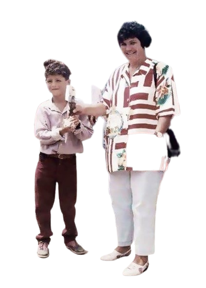

Cristiano Ronaldo dos Santos Aveiro

- Fecha de nacimiento: 5 de febrero de 1985
- Padres: María Dolores dos Santos y José Dinis Aveiro
Sporting de Lisboa
- Debut deportivo: 14 de agosto de 2002
- Posición: Delantero/Extremo
- Dorsal de debut: 28
- Partidos: 31
- Goles: 5
Manchester United
- Debut deportivo: 16 de agosto de 2003
- Posición: Delantero/Extremo
- Dorsal de debut: 7
- Partidos: 346
- Goles: 145
Real Madrid
- Debut deportivo: 6 de julio de 2009
- Posición: Delantero/Extremo
- Dorsal de debut: 9
- Partidos: 438
- Goles: 450
Al-Nassr FC
- Debut deportivo: 5 de enero de 2023
- Posición: Delantero/Extremo
- Dorsal de debut: 7
- Partidos: 38
- Goles: 32
 CR7
CR7